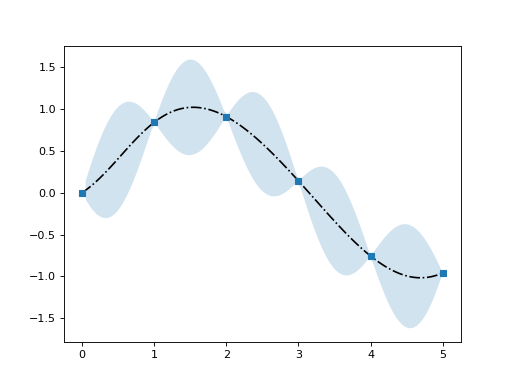

2. Gaussian Processes¶
The GaussianProcess implements Gaussian processes.
2.1. Simple Gaussian Process Regression¶
The _GaussianProcess object may be used to call the basic Gaussian process regression object BaseGaussianProcess with a kernels.SquareExponentialKernel covariance functions using
>>> from pydygp.gaussianprocesses import _GaussianProcess
>>> gp = _GaussianProcess('sqexp_gpr')
If we then make some data
>>> import numpy as np
>>> tt = np.linspace(0., 5., 6)
>>> Y = np.sin(tt)
Then we can fit the GP by calling the BaseGaussianProcess.fit() method for a particular set of kernel parameters (or the default)
>>> kpar = [1., 0.5]
>>> # fit the Gaussian process for given kernel parameters
>>> gp.fit(tt[:, None], Y, kpar=kpar)
>>> # new set of points to sample at
>>> ttd = np.linspace(tt[0], tt[-1], 100)
>>> # predict the mean and covariance of the new points conditional on observations
>>> mpred, cpred = gp.pred(ttd[:, None], return_covar=True)
Putting that altogether we have
(Source code, png, hires.png, pdf)
{kind=link}
{kind=link}

2.2. Hyperparameter Optimisation¶
To perform hyperparameter optimisation we call GaussianProcess.hyperpar_optim()